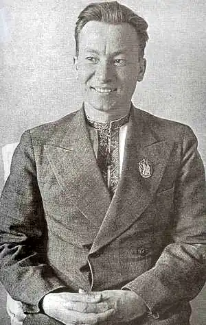
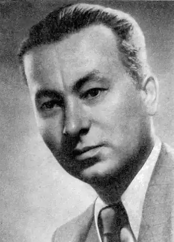

Андрій Малишко
(14 листопада 1912 — 17 лютого 1970)
Андрій Малишко — поет-лірик від Бога. Його голос, то ніжний і схвильований, як перші слова кохання, то гнівний, сповнений пристрасті вибухової сили, не можна сплутати з чиїмось іншим. Навіть у ряду визначних талантів, яких дала українська поезія світові в двадцятому столітті — Максим Рильський, Павло Тичина, Євген Маланюк, Богдан Ігор Антонич, Василь Стус, — постать Андрія Малишка не блякне, вирізняється глибокою поетичною самобутністю, власним баченням світу, органічним єдинокорінням з народнопоетичною творчістю, інтимним тоном звучання, навіть коли він говорить про світові, загальнолюдські проблеми. А ще — пісенністю своєї лірики, тим, що кожен її рядок бринить за камертоном української народної пісні. Звичайно, кожна людина, поет тим більше, формує себе сама. Та все ж і життя, особливо дитинство, де закладаються перші й найміцніші підвалини любові, духу, характеру людини, де батько з матір'ю, перші друзі, теж важить так багато в долі людській. Дитинство поета було важким, хоча й благополучним. З тісної селянської хати в невеликому селищі Обухові неподалік Києва, де народився 14 листопада 1912 року, виніс він найперш незрадливу любов до рідної землі та матері, до рідної пісні та слова, промовленого "в колисці із лози, Щоб вічним окаянним боржником Його нести, страждати і любити". У тій хатині почув він уперше і думи Шевченкові... Жилося родині Самійла Малишка не розкішне. Землі було дві десятини, а сім'я чималенька — тільки дітей одинадцятеро. Тож доводилося господареві і шевцювати, й на заробітки в Таврію ходити. От і малий Андрій пособляв чим міг. Ходив заможнішим по господарству помагати, грав на весіллях на гармонії, бо ж мав і талант музики. Підрісши, пішов у семирічку, потім навчався в медичному технікумі. Та кликали його інші мрії, жив у юнаковій душі потяг до прекрасного, до пісні, до поезії. Тож і привів він Малишка на літературний факультет Київського інституту народної освіти (тепер — Київський університет ім. Т. Шевченка), де взяв його під своє могутнє крило Максим Рильський, який там викладав і вів літературну студію. По закінченні ІНО деякий час молодий учитель викладає літературу в Овручі, на Житомирщині, пізніше працює в газеті "Радянське слово". У 1934 — 1935рр. служить у армії, а потім переходить на творчу роботу. Потяг до творчості в Малишка прокинувся дуже рано і мав своєрідний характер. Мати поетова, Ївга Базилиха, як її звали "по-вулишному", чудово співала. Андрій Самійлович в "Автобіографії" (1959р.) згадував, що її пісні врізалися в пам'ять на все життя. Тільки ж одне в них не задовольняло хлопця: сумні кінцівки. Не могло його чуле серце миритися з трагічною загибеллю козака, якому чорний ворон очі клює... І тоді Андрій перекомпоновував пісню по-своєму: ні, не вбито козака — поранено, вилікували його добрі люди, та й повернувся він додомоньку. А трохи пізніше почав і сам вірші складати, записувати до клейончатого зошита... Але батько, а був він людиною крутою, не вподобав синового захоплення. Та жага віршувати, творити не вщухала, і, власне, вона його й повела з Обухова до Києва. Перші друковані вірші студента А. Малишка побачили світ на сторінках журналу "Молодий більшовик" (тепер — "Дніпро"). А потім з'являється колективна збірка трьох авторів — "Дружба" (1935), і вже наступного року виходить книжка віршів "Батьківщина", що засвідчила неабиякий талант молодого поета. Наступні збірки — "Лірика", "З книги життя" (1938), "Народження синів" (1939) та інші — стали щабелями помітного творчого зростання. Тематика довоєнних творів різноманітна: праця хліборобів, події революції та громадянської війни, чудові пейзажні поезії, де картини природи гармонують з ліричним настроєм, з розквітом першого кохання ("Зимове", "Пейзаж", "Дощ упав на край широкий"). Героями творів Малишка є "хлібороби й сівачі", прості робочі люди. Оживає в його творах й історична пам'ять народу. Постають із рядків циклу "Запорожці" славетні прадіди наші, які кров'ю своєю боронили рідний край від ворогів. Та це була тільки прелюдія. Патетичною симфонією, закличним звуком сурми лунає поезія А. Малишка в роки війни проти фашистських нападників. Для нього, як, власне, й для всієї літератури, це були роки високого злету. Тоді з'явились "Україна в огні" О. Довженка, "Слово про рідну матір" та "Жага" М. Рильського, "Любіть Україну" В. Сосюри. З-під пера А. Малишка вилилась пристрасна, пекуча й ніжна пісня любові до Вітчизни — "Україно моя". Ще напередодні війни він написав чудову ліричну поезію "Червоновишневі зорі віщують погожий схід...", де інтимне "ти може, мене й забула: не бачила стільки літ..." — тісно переплелося із суворо-солдатським: "Друзі ідуть полками, і я серед них — сурмач". Сином України, сурмачем, поетом і журналістом пішов А. Малишко на фронт. Як заклик до битви, як плач над розтерзаною Матір'ю-Батьківщиною зазвучали його збірки: "До бою вставайте", "Понад пожари", "Україно моя!", "Битва"... І цикл "Україно моя" — чи не найсильніший з-поміж усіх, перейнятих болем та любов'ю до рідної землі могутніх творів його побратимів-поетів. Широкі епічні картини минулого й сучасного, пророчі візії майбутнього переплітаються з особистими спогадами й переживаннями поета. Романтична піднесеність і реалістична виразність, гнівна інвектива й ніжний ліризм утворюють широке багатобарвне художнє полотно вражаючої сили ніжності й любові: Україно моя, далі, грозами свіжо пропахлі, Польова моя мрійнице. Крапля у сонці з весла. Я віддам свою кров, свою силу і ніжність до краплі, Щоб з пожару ти встала, тополею в небо росла. Про силу впливу цієї поезії можна судити з листа Василя Стуса, який 13 грудня 1962р. писав Андрієві Малишку: "Я знаю, що заради щастя рідного народу я міг би всім пожертвувати, я знаю, що тут я вихований рідним духовним хлібом — "Жагою" М. Рильського, Вашим віршем "Батьківщино моя". Може здивувати те, що Стус називає вірш дещо інакше — "Батьківщино моя". Це вже справа рук компартійних цензурно-видавничих органів. У ті огненні роки вийшла-таки "Україно моя", вийшла й покликала синів України до бою. А потім, після війни, схаменулися — а де ж тут "великий, єдиний"? І замість "Україно моя" з'явилось "Україно Радянська" або й просто — "Батьківщино". Поет змушений був дописати строфу про "синів Росії", з якими поряд стояли українці... А ще пізніше зазвучали й звинувачення в "українському буржуазному націоналізмі". Хоча поет з пошаною й любов'ю ставився до всіх націй, включаючи й російську. Досить пригадати його поему "Прометей", де поранений солдат-росіянин, порятований українською матір'ю, вчиться в Шевченкового Прометея мужності та незламності, а після того, як усе село, ризикуючи волею й життям, визнає його земляком, теж знаходить у собі сили віддати життя за рятівників. По війні поет інтенсивно працює, виходять — як відгомін війни — збірки "Ярославна" та "Чотири літа" (1946р.), а далі нові книги, в яких Малишко творить широку картину народного життя, змальовує простих трудівників — не як бездушних "гвинтиків", а як неповторні творчі особистості, закохані в землю, працю на ній, звертається до минулого України. У збірці "Віщий голос" (1961р.) Малишко створює монументальний образ Тараса Шевченка, причому чує в вічному Кобзаревому голосі не тільки заклик "добре вигострить сокиру", а й насамперед велику людську любов, яка й веде його в житті: Тож стільки треба таїть любові В своїй недолі, в солдатській скруті, І так затятись на віщім слові, Щоб з нього тліли й кайдани куті. З роками голос Андрія Малишка міцнів, наливався силою. Поет починає пильніше придивлятися до життя, глибше сягати в сутність складних вічних проблем, бачить загальнолюдське, йдучи "Дорогою під яворами", як назвав він збірку (1964р.), що її певною мірою можна вважати етапною на творчому шляху, як і внутрішньо пов'язану з нею "Руту" (1966р.). У циклах "Пісня дороги", "Пісня яворів", "Сонети обухівської дороги" поет наче дорослим повертається в своє дитинство, з вершин життєвого досвіду і мудрості осмислює минуле й сучасне, розмірковує над майбутнім. Він замислюється над своїм корінням, у ряді "Сонетів обухівської дороги" це видно вже з їх назв: "Я з тих країв, де сині оболоні...", "Я з тих країв, де за Дніпром кургани...", "І ти з такого ж поля" та ін. У цих же збірках А. Малишко створив яскраву галерею поетичних портретів своїх учителів та друзів, які назвав піснями: "Пісня Тараса Шевченка", "Пісня Максима Рильського", такі ж пісні Остапа Вишні, Олександра Довженка, зокрема щире й тепле "Пісня Олександра Довженка", близького друга, з яким Малишко ділив і хліб, і пісню, й життєві незгоди. Та й у вірші "Рядок про Довженка" (зб. "Прозорість", 1962) у небагатьох словах розкрита й світова велич геніального письменника та кіномитця, і його страдницький життєвий шлях. Поглиблений філософський підхід Малишка до всього, що лягло йому на душу і перо, характерний для останніх збірок — "Синій літопис" (1968), "Серпень душі моєї" (1970), яка вийшла вже після смерті поета. Пристрасний лірик дещо поступається поетові-мислителеві, поетові-філософу, хоч лірична амплітуда віршів не спадає. Частіше трапляються характерні назви віршів: "Роздум", "Медитація", "Дума", "Пам'ять". Андрій Самійлович зосереджується на найскладніших філософських проблемах буття, дошукується першопричин, витоків усього, що діється у світі. У циклі віршів про складний, насичений болями, злочинами, війнами двадцятий вік поет-гуманіст із надією вдивляється в те, як він, цей жорстокий вік, "гойдає мільйони колисок, Щоб дітей не збудити", закликає його прийти в світ орачем, а не будувати "тюрем за гратами". Малишка завжди хвилювала проблема історичної пам'яті народу. Ряд поезій на цю тему — "В завійну ніч з незвіданих доріг...", "Приходять предки, добрі і нехитрі..." — здаються написаними у наші дні — настільки актуально вони звучать. Гостро, болісно відчуває поет свій, наш обов'язок перед далекими пращурами, котрих непокоїть, якими ми стали. — Чи ти не став розщепленим, як атом, Недовірком, схизматом чи прелатом, Ярижкою нікчемним, псом на влові? Дитино наша, ягодо з любові! Поет почуває свій борг перед минулим і майбутнім, перед усім, на світі сущим, — чорним хлібом і низенькою батьківською хатою, ручаєм і сосною, щастям закоханих...